Appendice 2 : Un résumé mathématique de la TRM
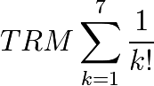
Les 4 libertés économiques
Pour la TRM la définition de la liberté est “ce qu’il est possible de réaliser sans nuire à soi-même et à autrui”. Il ne s’agit donc pas de possibilités non-réfléchies.
Les TRM définit 4 libertés économiques qui forment le fondement général de son approche et qui sont :
- La liberté de choix de son système monétaire
- La liberté d’utiliser les ressources
- La liberté d’estimation et de production de toute valeur économique
- La liberté d’échanger, comptabiliser afficher ses prix “dans la monnaie”
La liberté 3 établit notamment le principe de relativité comme essence de son approche.
Principe de relativité économique
La TRM se fonde sur le principe de relativité économique, qui établit que tout être humain définit un référentiel légitime pour estimer et produire tout type de valeur économique, connue ou inconnue par autrui.
Autrement dit, il n’y a pas de valeur économique absolue, pas d’être humain qui soit légitimement en mesure de définir ce qui est valeur ou non-valeur pour les autres êtres humains, ni dans l’espace (entre êtres humains présents), ni dans le temps (entre êtres humains distants dans le temps).
Espace-Temps
L’espace-temps économique est caractérisé essentiellement par les hommes qui font partie d’une zone économique donnée.
L’expérience de pensée suivante permet de comprendre ce point : si on enlève d’une zone économique donnée une valeur économique particulière, il restera toujours une zone économique. Si par contre on y enlève les hommes, alors il ne reste ni observateur ni acteur de cette zone économique.
C’est donc l’homme qui est le seul fondement invariant de toute économie.
Mais les hommes ne sont par ailleurs pas absolus non-plus, puisqu’ils sont de durée de vie moyenne limitée “ev” (espérance de vie moyenne), et se renouvellent dans le temps, les nouveaux nés remplaçant les morts.
Cette dimension est une donnée finie de l’espace-temps économique étudié par la TRM où, pour tout temps t considéré, l’ensemble des hommes est renouvelé à la date t + ev.
Nous appelons par la suite “espace” l’ensemble des individus pour une date donnée “t”, et “temps” le phénomène de succession du remplacement de ces individus dans le temps. L’espace-temps doit donc ici être compris relativement à cette définition.
Monnaie Libre
Une monnaie est une valeur économique de référence qui permet d’établir une métrique commune, pendant un temps donné et pour une zone monétaire donnée, permettant une mesure dans la même unité des valeurs et des échanges, permettant de faciliter la fluidité de l’économie entre acteurs distincts.
Précisons que quand bien même les individus ne s’accordent pas sur les valeurs économiques ni dans l’espace, ni dans le temps, ils utilisent tout de même une même unité de valorisation individuelle, en rapport avec une valeur de référence, qui est nommée “la monnaie”.
Une zone monétaire étant définie par l’ensemble dépendant du temps E(t) composé des individus I(x,t) qui ont adopté cette même monnaie (une même zone monétaire peut aussi comporter plusieurs monnaies).
Une monnaie est alors dite “libre” s’il s’agit d’une valeur de référence valide pour une métrique qui respecte le principe de relativité de toute valeur économique, ainsi que l’espace-temps humain défini ci-dessus, n’établissant aucun contrôle arbitraire (ce qui signifie des lois devant être de même forme pour tous) des uns sur les autres, essentiellement pour ce qui concerne la reconnaissance et la production de toute valeur économique.
Pour être qualifiée de libre une monnaie ne peut donc pas reposer sur un arbitraire de décision quant à ce qui est valeur ou non-valeur, ni se produire préférentiellement pour certains hommes, dans l’espace ou bien dans le temps.
Elle doit être l’unité comptable parce qu’elle est la référence de la métrique (tout comme en physique relativiste les vitesses sont exprimées en proportion de la vitesse de la lumière).
Elle doit être une valeur économique tout de même (tout comme la lumière est un objet physique), parce que nous devons avoir une métrique économique. Mais devant être indépendante des autres valeurs, son coût de production doit être minimal (la masse de la lumière est nulle, c’est justement ce qui lui donne son invariance).
Il faut donc concilier invariance et finitude pour la valeur, ainsi que coût de production minimal. L’homme étant le seul fondement invariant, il ne peut s’agir que d’une valeur purement numérique co-produite par les hommes, dont la valeur est exprimée relativement à sa propre somme.
Nous appelons  la monnaie M moyenne
pour les N hommes à durée de vie limitée partie prenante de cette économie à l’instant “t”.
la monnaie M moyenne
pour les N hommes à durée de vie limitée partie prenante de cette économie à l’instant “t”.
Les hommes devant tous être co-producteurs de cette même valeur économique, alors qu’ils se remplacent dans le temps, nous devons donc définir une production de notre valeur de référence M, de même forme pour les individus, dans l’espace et dans le temps.
Nous établissons ainsi une métrique économique dont la valeur de référence est produite de façon invariante par changement de référentiel (changement d’individu, quelle que soit l’époque à laquelle il naît, vit et meurt).
Pour chacun des N individus I(x,t) de la zone monétaire ainsi établie, et sous condition de quasi-stabilité (notamment de N), la production relative instantanée (différentielle) d’une monnaie libre, ne peut donc être que la même dans l’espace (symétrie spatiale), ainsi que la même dans le temps (symétrie temporelle).
Autrement dit, il ne peut donc y avoir de production de monnaie libre qui ne soit la même pour tout individu participant de cette monnaie pour un instant “t” donné, et cette production relative est indépendante du temps.
(1)
Pour la suite et par soucis de concision nous omettrons la différentielle de temps “dt”, d’autant que dt = 1 lors de la transformation en calculs discrets.
On en déduit, en nous plaçant sous hypothèse de continuité et dérivabilité, (voir à ce sujet le chapitre “Variations de N et calcul du DU”) :
(2)
Par ailleurs les individus ayant une durée de vie limitée “ev”, la production instantanée (dérivée) étant établie comme invariante, la somme relative individuelle produite pendant une durée de vie ne doit pas non plus être dépendante du temps.
La monnaie de ceux qui s’en vont doit laisser place à la monnaie
de ceux qui vont les remplacer au bout de cette durée.
Ce qui est équivalent à dire que  années plus tard,
les vivants doivent avoir co-produit leur propre pleine part relative de monnaie :
années plus tard,
les vivants doivent avoir co-produit leur propre pleine part relative de monnaie :
(3)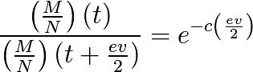
Ce principe symétrique entre ceux qui s’en vont
et ceux qui arrivent établit un centre de symétrie de convergence
au point où ceux qui arrivent
à ce point représentent une proportion de  de ceux qui s’en vont, pour une autre expression voir aussi (14) :
de ceux qui s’en vont, pour une autre expression voir aussi (14) :
(4)
D’où il s’ensuit de (1) et (4) que nous obtenons un taux symétrique
où la moyenne  est atteinte pour tout individu,
à près,
au point de sa participation
à la monnaie libre ainsi établie, quelle que soit l’époque considérée.
est atteinte pour tout individu,
à près,
au point de sa participation
à la monnaie libre ainsi établie, quelle que soit l’époque considérée.
(5)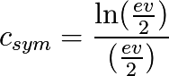
Les taux “c” inférieurs à 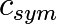 établiront une métrique favorisant les individus plus âgés, tandis que les taux supérieurs favoriseront les individus les plus jeunes.
Ce taux de convergence a une limite basse  obtenue
pour une convergence atteinte en fin d’espérance de vie moyenne :
obtenue
pour une convergence atteinte en fin d’espérance de vie moyenne :
(6)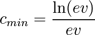
Application numérique pour la France ayant une espérance de vie de 80 ans en 2014 :
(7)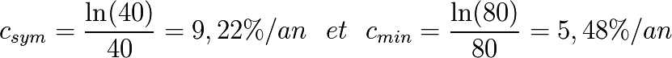
Quantitatif
Nous appelons Dividende Universel la quantité différentielle invariante à la date “t”, que nous pouvons décrire indifféremment sous forme continue ou discrète (qui sera utile pour établir des approximations d’une mise en pratique) :
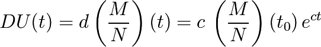
Ou bien :
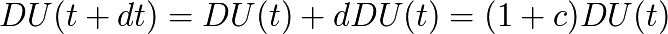
Correspondant aux unités monétaires co-créée par les individus pour l’unité de temps annuelle “t”, et qui sera donc de la forme :
(8)
Et Q(t) la somme des unités monétaires co-produite par un individu
entre les instants  date initiale de sa participation à la métrique et t :
date initiale de sa participation à la métrique et t :
(9)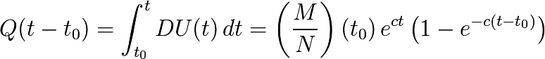
Ce qui nous donne graphiquement :

Relatif
Étant donné ce qui précède nous avons aussi l’expression relative de la monnaie de référence de la métrique économique globale sous la forme immuable dans l’espace-temps :
(10)
Et
Nous pouvons donc aussi transformer notre métrique en relatif
sur la base de l’unité relative “DU” ainsi établie.
Appelons maintenant 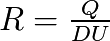 le nombre d’unités relatives
co-produites par un individu entre et t :
(11)
Ce qui nous donne graphiquement :
{kind=link}
Dans le référentiel relatif la part de monnaie co-produite par tout individu participant de cette métrique converge asymptotiquement et invariablement (dans l’espace-temps) vers :
(12)
Et plus particulièrement pour  avec
avec  :
:
(13)
Étant donnés (10), (11) et (13) , nous pouvons exprimer la condition fondamentale (4) sous la forme :
(14)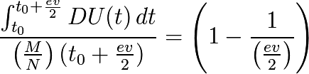
Que nous pouvons donc exprimer selon (14) par :
“La somme des DU produite par un individu, participant d’une monnaie libre,
pendant 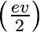 converge vers la masse monétaire moyenne
à près, quel que soit cet individu
et quelle que soit l’époque considérée.”
Ou encore selon (13) par :
“La somme des DU relatifs produite par un individu, participant d’une monnaie libre,
pendant converge vers  à
près,
quel que soit cet individu et quelle que soit l’époque considérée.”
à
près,
quel que soit cet individu et quelle que soit l’époque considérée.”
Graphique relatif de la part monétaire générée par un individu pendant et après son départ :

Asymétries initiales
Considérons le cas particulier d’un individu démarrant sa présence
au sein de la métrique avec une part initiale de monnaie
(don, héritage, ou échange économique quelconque) 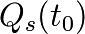
et ayant des échanges avec l’extérieur équilibrés
(les achats monétaires étant toujours égaux aux ventes monétaires).
Cet individu, nous le nommons pseudo-autonome,
verra sa part de monnaie  évoluer comme suit :
évoluer comme suit :
En quantitatif :

En relatif appelons 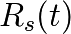 l’évolution de sa part de monnaie :
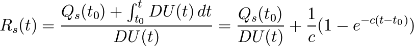
Et nous avons :

Et donc en factorisant nous obtenons finalement la forme relative :
(15)![R_s(t)=\frac{1}{c}\left[ 1-e^{-c(t-t_{0})}\left( 1-cR_s(t_{0}) \right) \right]](_images/math/c9f4811761a972bceb990e03e157327d505425cb.png)
Où nous voyons directement que si 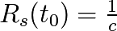
ce qui est équivalent à  ,
alors, pour tout t on aura l’égalité
,
alors, pour tout t on aura l’égalité

Maintenant selon les trois cas,  ,
,
 ou
ou  ,
nous avons, sous condition d’échanges équilibrés,
les trois évolutions suivantes dans le référentiel relatif :
,
nous avons, sous condition d’échanges équilibrés,
les trois évolutions suivantes dans le référentiel relatif :

Une évolution qui n’est valide que dans le cas particulier étudié ici.
Les quatre référentiels
Nous avons vu précédemment deux référentiels de mesure quantitatif et relatif, dont la loi de transformation est donnée par :

Nous pouvons aussi établir le référentiel quantitatif de mesure à somme des comptes nulle, par la transformation :
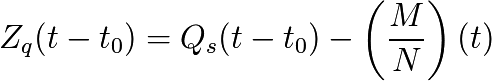
Ou bien encore le référentiel relatif à somme des comptes nuls :

Tout individu étant parfaitement en mesure de passer ainsi dans le référentiel qui lui semble le plus adapté. Un même système monétaire libre peut donc proposer au moins 4 référentiels distincts pour tout individu en faisant partie, ce choix étant purement individuel :
- Le référentiel quantitatif.
- Le référentiel quantitatif à somme nulle.
- Le référentiel relatif.
- Le référentiel relatif à somme nulle.
Variations pour un individu pseudo-autonome
Étudions ici la variation d’un compte monétaire pour un individu pseudo-autonome. Tout d’abord en quantitatif :
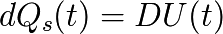
Et en relatif :
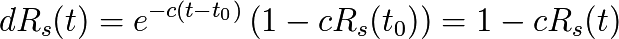
Ce qui nous permet d’affirmer les conclusions parfaitement équivalentes (a) et (b) suivantes :
(a) “Dans le référentiel quantitatif le compte d’un individu pseudo-autonome apparaît comme s’il s’y ajoutait un Dividende Universel entre deux unités de temps.”
(b) “Dans le référentiel relatif le compte d’un individu pseudo-autonome apparaît comme si entre deux unités de temps il s’y ajoutait 1 Dividende Universel, et que dans le même temps il s’y soustrayait une proportion égale à c.”
Ayant compris que ces points ne sont qu’apparence, un individu participant d’une monnaie libre choisit le référentiel de son choix pour ce qui est de ses comptes monétaires, quantitatif, relatif, quantitatif à somme nulle, relatif à somme nulle, ou tout autre référentiel qu’il jugera le plus conforme à son expérience, ceci n’impactant en rien la monnaie libre établie.
Généralisation et loi de changement de référentiel
En généralisant le raisonnement précédent, il est possible d’établir sur la base d’une même monnaie libre des changements de référentiels faisant apparaître la monnaie au sein de masses monétaires de croissance quelconque, faisant ainsi apparaître des soustractions monétaire, ou bien inversement, de retrouver le référentiel où, un système monétaire qui apparaît comme ayant une croissance quelconque associée à une soustraction monétaire redistribuée inconditionnellement, apparaîtra comme étant sans aucune croissance (référentiel nommé par la TRM “relatif”), ou encore sans aucune soustraction monétaire (nommé par la TRM “quantitatif”).
Soit donc une monnaie libre établie dans 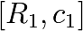 et sa transformation dans 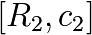,
coïncidantes en  où
où  .
.
Étant donné que nous étudions un changement de référentiel, notons que pour tout t :  , et par ailleurs :
, et par ailleurs :

et

La loi de transformation de  en 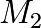 peut se trouver (par exemple) en calculant préalablement “t” selon , puis en le reportant dans
en 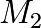 peut se trouver (par exemple) en calculant préalablement “t” selon , puis en le reportant dans
![t = \frac{1}{c_{1}} \, \, ln \left[ \frac{ \left(\frac{M_{1}}{N}\right)(t) }{ \left(\frac{M_{1}}{N}\right)(0)} \right]](_images/math/d6d59b4902ef417393a456b88d3edaa65734cb03.png)
D’où l’on déduit la transformation cherchée :
(16)![\left(\frac{M_{2}}{N}\right)(t) = \left(\frac{M_{1}}{N}\right)(0) \left[ \frac{\left(\frac{M_{1}}{N}\right) (t)}{\left(\frac{M_{1}}{N}\right) (0)} \right]^{ \left( \frac{c_{2}}{c_{1}} \right)}](_images/math/6c9638127cfc81eac8c82b76ecf60d2a0963817d.png)
La transformation étant ainsi établie, s’applique à toute unité monétaire de façon cohérente, et ainsi pour tout compte nous obtenons la transformation locale entre 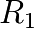 et 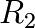 facilement :

Et donc in-fine 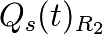 s’obtient directement de par :
(17)![Q_s(t)_{R_{2}} = Q_s(t)_{R_{1}} \left[ \frac{\left(\frac{M_{2}}{N}\right) (t)}{\left(\frac{M_{1}}{N}\right) (t)} \right] = Q_s(t)_{R_{1}} \left[ \frac{\left(\frac{M_{1}}{N}\right) (t)}{\left(\frac{M_{1}}{N}\right) (0)} \right]^{\left( \frac{c_{2}}{c_{1}} - 1 \right)}](_images/math/9a289bd7bbde80ce591c92ed6af8d430fc5dd028.png)
Maintenant, calculons la variation entre deux unités de temps d’un compte pseudo autonome dans :
![dQ_s(t)_{R_{2}} = dQ_s(t)_{R_{1}} \left[ \frac{\left(\frac{M_{1}}{N}\right) (t)}{\left(\frac{M_{1}}{N}\right) (0)} \right]^{\left( \frac{c_{2}}{c_{1}} - 1 \right)} \, + \, Q_s(t)_{R_{1}} d\left[ \frac{\left(\frac{M_{1}}{N}\right) (t)}{\left(\frac{M_{1}}{N}\right) (0)} \right]^{\left( \frac{c_{2}}{c_{1}} - 1 \right)}](_images/math/a92de62b0624a59643a7dfa13a5b56b052d8baee.png)
Avec
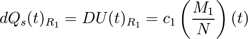
et
![d\left[ \frac{\left(\frac{M_{1}}{N}\right) (t)}{\left(\frac{M_{1}}{N}\right) (0)} \right]^{\left( \frac{c_{2}}{c_{1}} - 1 \right)} = (c_{2} - c_{1}) \left[ \frac{\left(\frac{M_{1}}{N}\right) (t)}{\left(\frac{M_{1}}{N}\right) (0)} \right]^{\left( \frac{c_{2}}{c_{1}} - 1 \right)}](_images/math/02d838e6dd326d4b6dbc8b647ec172ab16ac0864.png)
En tenant compte de (16) et (17), nous obtenons :
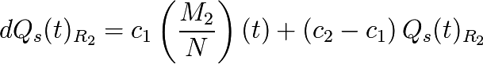
Ce qui peut aussi s’écrire sous la forme :
(18)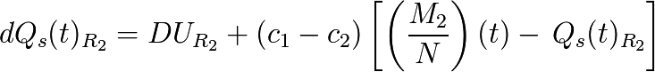
Rappelons ici que

Il apparaît donc dans que le système monétaire se comporte “comme si” il était taxé sur chaque compte individuel  de monnaie,
reversée inconditionnellement pour chaque membre en parts égales 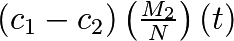, ce à quoi est rajouté 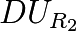.
de monnaie,
reversée inconditionnellement pour chaque membre en parts égales 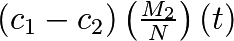, ce à quoi est rajouté 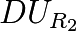.
La transformation ainsi connue entre ces référentiels, permet donc à l’inverse, connaissant un taux de croissance monétaire quelconque  et un taux de soustraction monétaire reversé inconditionnellement quelconque aussi
et un taux de soustraction monétaire reversé inconditionnellement quelconque aussi  de retrouver le référentiel quantitatif de croissance 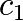
et de soustraction monétaire nulle, où la monnaie libre équivalente apparaît sous sa forme quantitative nette.
de retrouver le référentiel quantitatif de croissance 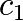
et de soustraction monétaire nulle, où la monnaie libre équivalente apparaît sous sa forme quantitative nette.
À noter aussi que pour le changement dans le référentiel 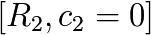, nous obtenons :
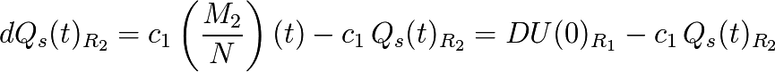
Et étant donné que  nous avons 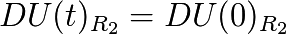 qui est donc une constante arbitraire,
que nous pouvons poser comme égale à 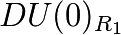, constante qui ne change pas le calcul des dérivées, et alors nous obtenons :
nous avons 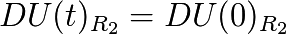 qui est donc une constante arbitraire,
que nous pouvons poser comme égale à 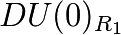, constante qui ne change pas le calcul des dérivées, et alors nous obtenons :
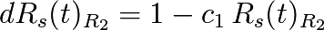
Ce qui est la forme établie au paragraphe 9, il s’agit donc bien au facteur constant près, de la transformation de dans le référentiel Relatif où la croissance monétaire apparaît comme nulle.
Nous avons ainsi établi une Loi générale de changement de référentiel où une même monnaie libre apparaît selon un taux de croissance arbitraire, associé à un taux de taxe et redistribution monétaire déterminé. Cette même Loi nous permettant de retrouver la monnaie libre sous-jacente de systèmes monétaires possédant cette caractéristique.
Un autre résultat remarquable est que, si nous appelons 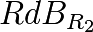 la quantité calculée dans :  correspondant à ce qui est ajouté positivement sur chaque compte, alors nous aurons toujours, pour tout :
correspondant à ce qui est ajouté positivement sur chaque compte, alors nous aurons toujours, pour tout :
(19)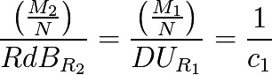
Que nous pouvons exprimer comme : “le nombre de DU dans le référentiel est égal au nombre de RdB dans le référentiel ”.
Théorème :
Il existe donc des référentiels 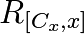 où 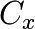 correspond à un taux de croissance, 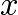 étant un taux de taxation
et redistribution inconditionnelle, et tels que  , qui sont tous équivalents et permettent de représenter une même monnaie, selon la Loi de transformation précédemment établie et d’invariant relativiste :
, qui sont tous équivalents et permettent de représenter une même monnaie, selon la Loi de transformation précédemment établie et d’invariant relativiste :
(20)![\frac{\left(\frac{M}{N}\right)_{R_{[C_{x},x]}}}{RdB_{R_{[C_{x},x]}}} = \frac{\left(\frac{M}{N}\right)_{R_{[c,0]}}}{DU_{R_{[c,0]}}} = \frac{1}{c}](_images/math/039802d7a20bd86538b9bbe441a316aae4cbc923.png)
En calculs discrets
La mise en place d’un DU calculé sur une unité de temps discrète, nous demande d’effectuer ces mêmes calculs en mode discret et pas en mode continu, ce qui fait une très légère différence (d’autant plus petite que le pas temporel sera petit) dont nous devons tenir compte si nous voulons être très précis.
En tranformation discrète, on aura :

Et donc :
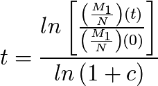
Ce qui implique :
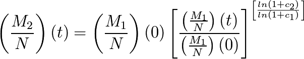
Et donc :
(21)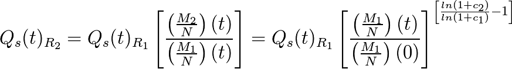
Maintenant nous allons retrouver le “taux de taxe” apparent en fonction uniquement des données déjà calculées depuis . Ceci est nécessaire pour pouvoir réaliser en pratique un changement de référentiel simple et direct avec les seules données du référentiel fondamental.
La raison en est qu’en calcul discret plusieurs options sont possibles selon que l’on prend des données au temps “t” ou au temps “t+1” pour calculer les dérivées approchées d’une fonction.
Dans nous avons l’égalité :
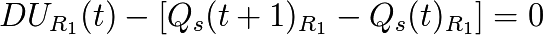
Appliquons la transformation de  vers
vers  en multipliant par 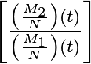
et en remarquant que
en multipliant par 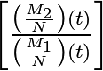
et en remarquant que ![\left[\frac{\left(\frac{M_{2}}{N}\right) (t)}{\left(\frac{M_{1}}{N}\right) (t)}\right] = \frac{(1+c_{1})}{(1+c_{2})} \left[ \frac{\left(\frac{M_{2}}{N}\right) (t+1)}{\left(\frac{M_{1}}{N}\right) (t+1)}\right]](_images/math/595aa17e78292e1a7dbba2dbd6eb349d9cce30cd.png) , nous obtenons :
, nous obtenons :
![RdB_{R_{2}}(t) - \left[ Q_s(t+1)_{R_{2}} \frac{(1+c_{1})}{(1+c_{2})} - Q_s(t)_{R_{2}} \right] = 0](_images/math/c8085610e5e015bc407fe50aefa02a098fec01f4.png)
Dans le taux de croissance monétaire étant le taux de “taxe apparente” équivalent est,
comme vu précédemment avec le calcul continu, le taux 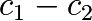, et de l’équation précédente nous retrouvons cette valeur selon le calcul exact :
(22)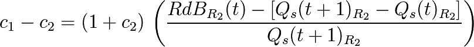
Tous les termes de droite étant déjà calculés par transformation directe depuis  .
.
Nous avons un ratio calculé entre valeurs prises à l’occurrence “t” et d’autres à l’occurence “t+1”, ce qui est attendu dans le calcul d’une dérivée discrète.
La présence du facteur 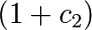 n’est pas étonnante puisque c’est le taux d’expansion discret de , qui multiplié par des données “t” donne une approximation des données en “t+1”. On doit donc comprendre que cela produit une bonne valeur intermédiaire du numérateur entre “t” et “t+1”.
Nous avons donc bien ici le calcul instantané de la “taxe apparente” dans à partir de données directement issues de , permettant un affichage .
Enfin, en remarquant que  nous pouvons aussi obtenir le calcul de cette taxe apparente en différentielle discrète sous la forme :
nous pouvons aussi obtenir le calcul de cette taxe apparente en différentielle discrète sous la forme :
(23)![(taxe \, apparente)_{R_{2}} = (c_{1}-c_{2})\left[\frac{Q_s(t)_{R_{2}} + c_{1}\left(\frac{M_{2}}{N}\right)}{(1+c_1)}\right]](_images/math/52766ab4e5358ed3f8cfec64702715c50a0bb02c.png)
Cette forme reprend le taux de la taxe appliqué au compte augmenté du RdB (visant sa valeur en “t+1”, sans taxe),
et ramené de cette valeur approchée en “t+1” vers sa valeur en “t” par la division par  .
.
On remarque immédiatement que lorsque le compte vaut la moyenne, la taxe théorique s’applique au compte directement et sans approximation intermédiaire.
Variations de N et calcul du DU
Étant donné ce qui précède il faut garder à l’esprit que c’est la convergence de demie vie qui est l’objectif atteint par une monnaie libre, les nouveaux entrants remplaçant les morts (voir à ce propos les formes (4) et (14) concernant la condition temporelle valable pour tout individu).
Il ne s’agit pas, en cherchant une méthode de calcul pratique du DU de procéder à une estimation en ne regardant que le calcul différentiel local. Il faut garder à l’esprit le fonctionnement fondamental d’une monnaie libre qui est aussi d’assurer pour tout homme, durant sa vie, et particulièrement au centre de symétrie temporelle, en demie vie, la même part relative de monnaie que ses prédécesseurs et successeurs au même point.
Notamment on se convaincra par la réflexion de la nécessité d’aborder la solution pratique en prenant en considération des cas extrêmes, comme celui du cas de forte hausse du nombre de participants d’une monnaie libre (équivalente à une pseudo-initialisation de monnaie), où le DU calculé en relatif ( ) subira une forte discontinuité, détruisant la continuité de la progression, et deviendrait extrêmement bas vis-à-vis des participants initiaux, peu nombreux, et qui posséderaient dans ce cas une part monétaire extrêmement forte par rapport aux nouveaux entrants, sans rapport avec le DU calculé.
Autrement dit, de façon plus mathématique, les équations fondamentales (1) et (4)
exprimées dans l’analyse de la forme d’une monnaie libre,
n’ont de solutions identifiées que pour  continue et dérivable (ou quasi-continue et quasi-dérivable),
qu’il faudra donc approcher au mieux en cas de variations discontinues.
continue et dérivable (ou quasi-continue et quasi-dérivable),
qu’il faudra donc approcher au mieux en cas de variations discontinues.
Cette réflexion rejoint la nécessité d’avoir un DU(t=0) non relatif, puisque pour établir une proportion monétaire, encore faut-il que la monnaie existe en premier. On comprend sur ce cas qu’il y a alors convergence de phénomène entre l’initialisation d’une monnaie libre, et la très forte augmentation du nombre de membres d’une monnaie installée. La solution conforme à la TRM, devant être indépendante du temps (principe de relativité), on comprend dès lors que l’on doit se trouver dans ces cas à établir une quantité non-relative du DU(t), donc une quantité fixe et stable, jusqu’à ce que le domaine relatif soit atteint.
N(t) est inconnu, aussi afin d’évaluer la forme d’une méthode générale de génération pratique, nous devons établir une méthode des plus simples et des plus lisibles, que nous pouvons approcher via une modélisation de la variation de N sous la forme ou encore et nous prenons une approximations pour M conforme à .
À noter que doit être entendu comme étant en général “petit”
sur des durées de l’ordre de ,
et même devant c. En effet sur la base expérimentale de la France,
entre 1950 et 1990 la population a varié de 41 à 56 millions,
ce qui correspond à  /an
tandis que /an.
/an
tandis que /an.
Nous obtenons une approximation de la variation différentielle du Dividende :

D’où nous déduisons une première forme :

Ainsi qu’une seconde forme approchée au premier ordre (“c” étant petit) :
Une borne minimale simple apparaît pour les positif,
si  on a
on a  ,
et une autre borne minimale simple apparaît pour les petits et négatifs,
que nous sommes heureux de retrouver sous cette forme,
puisqu’elle est très proche de la définition :
,
et une autre borne minimale simple apparaît pour les petits et négatifs,
que nous sommes heureux de retrouver sous cette forme,
puisqu’elle est très proche de la définition :  .
.
De ces deux bornes minimales révélées par cette approximation nous pouvons déduire un calcul pratique simple du DU, faisant apparaître une forme quantitative et une autre relative, s’adaptant de façon souple aux variations de N :
(24)![DU(t+dt) = Max \left[ DU(t);c\,\frac{M(t)}{N(t+dt)} \right]](_images/math/2ba42c4cebd2556bd38a866546dd9afb94f04030.png)
Notamment on reconnaît que pour N stable, la forme convergera rapidement vers son expression relative fondamentale (ce qui est absolument nécessaire) :
Cette forme est notamment extrêmement pratique pour le développement d’une monnaie libre indépendante partant de zéro, mais aussi de façon équivalente pour gérer de façon souple les variations imprévisible de N, tout en ayant une loi invariante dans l’espace et le temps et sans s’éloigner de la forme fondamentale.
En étant simple, facile à comprendre, et rassurante d’un point de vue quantitatif, cette forme apparaît comme la meilleure qui se puisse trouver.
On peut en résumer le fonctionnement ainsi :
“Le DU ne baisse jamais en quantitatif, et il est toujours au minimum égal à une proportion relative c de la masse monétaire.”
D’autres formes sont bien entendu possibles étant donnée l’incertitude sur N(t), les formes les plus simples étant les meilleures…
De façon générale, pour s’assurer de la pertinence de cette forme, et éventuellement la comparer avec d’autres, comme la triviale mais dangereuse forme théorique, qui n’est que différentielle , il convient de simuler des N(t) quelconques, et de tester alors les différentes formes, tout à gardant à l’esprit qu’il s’agit pour ce faire, d’y placer des individus de durée de vie limitée, en simulant des opérations sur des durées plus grandes que ev, et d’évaluer si pour l’ensemble de ces individus les principes fondamentaux sont bien respectés, à peu près tout le temps.